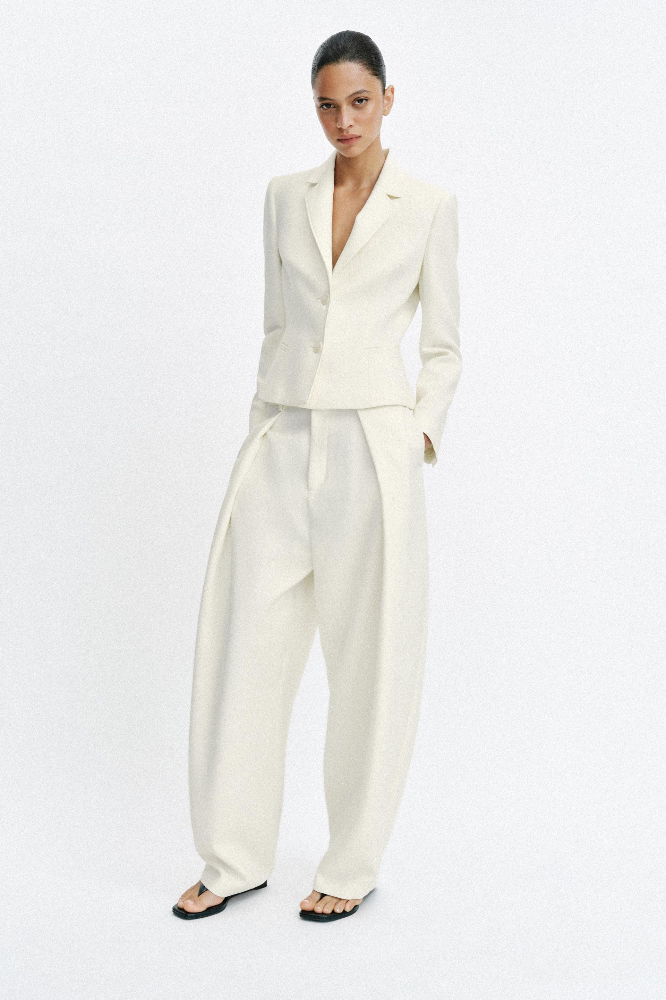
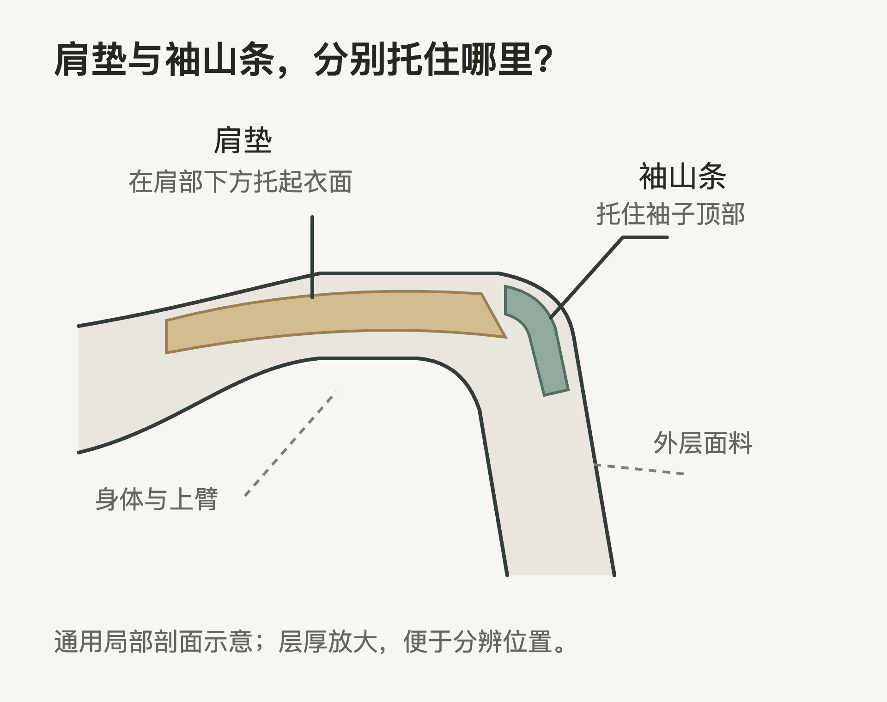
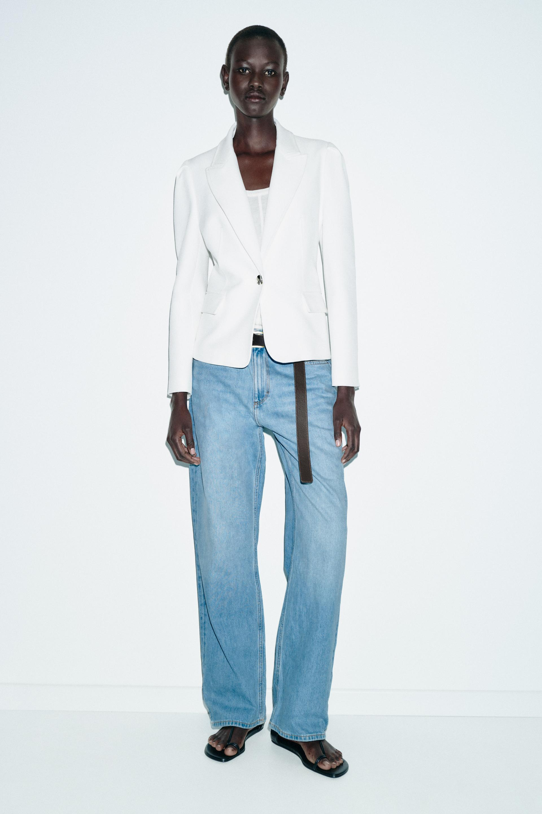
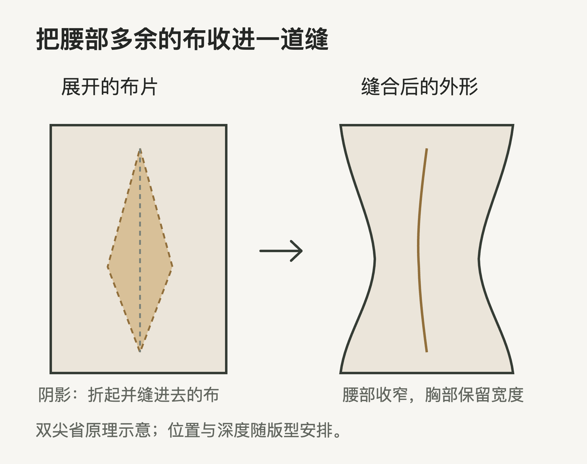
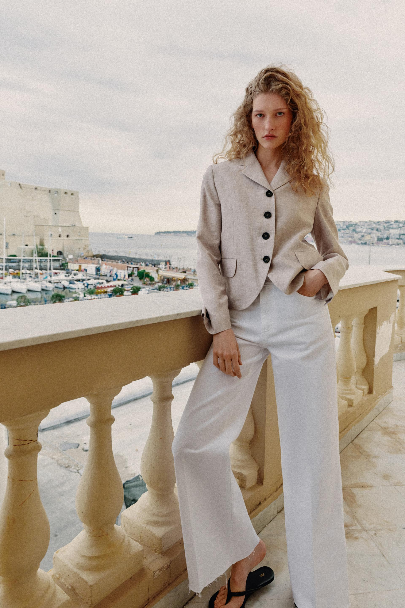
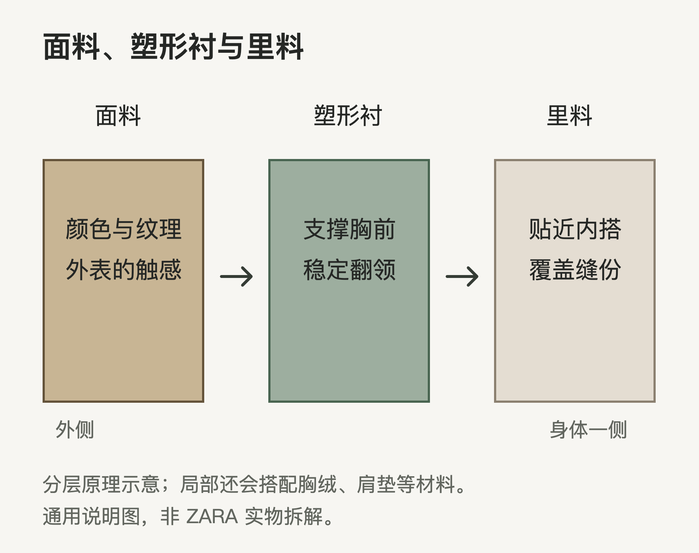
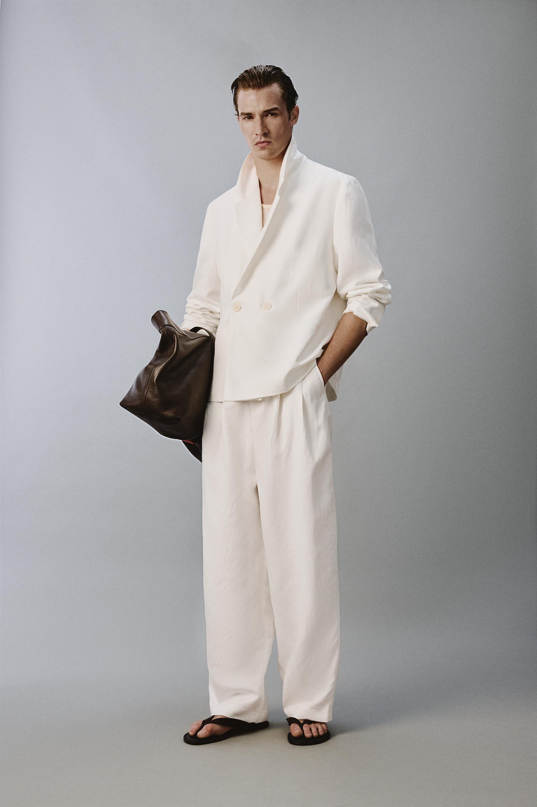

穿上西装，肩膀显得平整了，胸前的衣料顺着身体落下来，腰部又收出一道弧线。这些变化来自一连串具体做法：肩部的裁剪与垫层整理肩线，裁片和省道缝出胸腰曲线，藏在衣服里面的衬料则帮助胸前与翻领保持形状。
这也是西装令人着迷的地方。一块柔软的布，经过裁剪、缝合和整烫，成了一件有肩、有胸、有腰的上衣。穿着者仍然能够转身、落座、抬手；衣服替身体整理出较为清楚的线条，也带来了挺拔、稳当或轻松的穿着印象。
沿着几件 ZARA 西装的肩线、腰线和翻领看下去，再翻到衣服里面，就能把这些外形与具体的制作方法接起来。
肩膀的线条，从领边一直延伸到袖子
看一件西装，可以先沿着脖子向两侧看。肩膀从哪里开始向下倾斜，到了袖子顶部是圆圆地转下去，还是留下明显的转角，这几处变化会很快改变整个人的样子。

图中的肩膀平整，袖子从肩端顺势垂下。ZARA 对这款上衣明确写有垫肩。肩垫藏在面料下面，填补身体肩部与衣服之间的部分空隙，把外层的布托起来。
肩垫有厚薄、宽窄和不同的弧度。薄一些的肩垫可以顺着身体铺开，让肩面看起来更平顺；较厚、向外延伸的做法，则能把肩膀托得更高、更宽。身体本来的肩斜、纸样的肩线，以及肩垫的形状，要一起配合。正因如此，同样写着“垫肩”的两件西装，也会呈现出不同的肩膀。
衣服上的肩端还连着袖子。袖子最上方的弧形部分叫袖山，它要缝进衣身的袖窿，也就是手臂穿过的开口。一些西装在袖山缝份附近加上细长的填充条，称为袖山条。它托住袖子顶部，让布从肩端转向上臂时更加饱满。

肩垫托住肩面，袖山条则照顾着袖子转下来的那一道弧。肩面、袖山和上臂连接得顺，西装就显得利落；袖顶做得更突出，肩端也会更加醒目。肩部填充与袖山的做法
柔和的肩膀也有清楚的制作思路。英国裁缝品牌 Anderson & Sheppard 介绍自家做法时，强调少量肩部填充、圆润肩线与较轻的胸衬。这是一种让西装随身体活动的选择，穿着印象更接近自然、舒展。品牌对软肩剪裁的说明
因此，挑选肩膀时，可以先想自己想穿出怎样的样子：平直、外扩的肩膀更醒目，圆缓的肩膀更贴近日常。接着把手臂放松，看肩端是否平顺，再试着往前伸手。镜子里的线条与身体的感受，都值得留意。
肩膀看着挺，手臂为何仍能活动
肩膀的样子主要从上方看，抬手的感受还要看腋下。袖窿的位置、上臂的宽度与后背留出的余量，都会参与一次简单的伸手动作。
把手伸向前方时，手臂带着袖子移动，后背的布也要跟着展开。袖窿落得很低，手臂向上抬到一定程度，就容易连着腋下的衣身一起提起。做得较高、贴近手臂根部的袖窿，配合足够的袖子宽度，可以让更多动作发生在袖子里，减少衣身被一同带起的程度。
Anderson & Sheppard把较高的袖窿、饱满的袖山、胸背余量放在一起使用，目的就是让手臂活动时，上衣仍较好地停留在原来的位置。这里要一起看的，是腋下位置与手臂周围的宽度；单独把开口做窄，仍会夹住身体。品牌的袖窿与活动余量说明
这也帮助理解两种容易混在一起的感受：一件衣服看起来宽大，抬手时却整件向上跑；另一件腰身较清楚，伸手拿东西反而更顺。宽松程度与活动舒适度，各有自己的制作原因。试穿时往前抱一下手臂，往往比站着看一眼更能发现差别。
胸前留出余量，腰部怎样收进去
人的胸部、背部和腰部各有起伏。西装要沿着这些起伏铺开，靠的是布片的形状，以及它们怎样缝在一起。
纸样就是裁布前使用的形状模板。前片、侧片、后片与袖片，会按设计分别画出，再沿缝线接合。几片布的边缘各有弧度，缝合后，衣身就能从较饱满的胸前过渡到较窄的腰部。

这张照片里，肩膀向外展开，腰部在纽扣附近收窄，衣摆又逐渐放开。上宽、中间收进、下方展开，衣服把这几处差别连成一条连续的曲线。白色面料上的缝线与阴影，也让胸腰的变化更容易看见。
其中一个常见做法叫省道。它是在一块布上折起一条逐渐变窄的余量，再把折起部分的两边缝合。布的某个部位收进去，旁边就能保留足够的宽度，容纳胸部或肩背的起伏。
试着把一张纸围在一个圆物体上，边缘容易多出几处折叠。衣服也需要处理这种平面包住立体身体时出现的余量。裁缝把要收进去的布安排在适合的位置，缝好之后，外表留下的是一道顺着身体走向的缝线。

双尖省像一条细长的菱形，中间收得较多，上下逐渐归零，适合处理胸腰之间的宽度变化。另一种办法，是把省量转移到两块布的拼接处，让弯曲的分割缝承担塑形工作。外观看到的可能是一条从袖窿附近延伸下来的长缝，缝线两侧的布已经各自经过裁剪。
胸前保留多少宽度，腰部收进多少，决定了衣身贴近身体的程度。收腰明显的款式，把腰的位置描绘得清楚；较直的款式，则让胸前到下摆保持更充足的宽度。穿着者可以借此选择自己喜欢的身体线条。
省道还需要整烫。缝好后，把布放在弧形烫垫上整理，能帮助省尖附近平顺地贴合胸部。缝线负责收进余量，整烫则把缝合后的布整理得更圆顺。省道与整烫的说明
同样的胸围，也会穿出不同的前胸
胸围是围着身体量一圈得到的长度。这一圈里面，前胸、侧面与后背分别占多少，还要看每个人的身体。胸前较丰满、背部较平，与胸前较平、背部较厚的人，即使胸围数字接近，需要的布也会分配在不同位置。
衣服也一样。同样宽的一片前身，省道收进多少、在什么高度归零，会改变布向前包出的程度。分割缝的弧度，也会影响衣料是贴着胸部走，还是从胸前较直地落下来。只把整件衣服买大一码，会同时增加肩宽、衣长和腰围；换一种胸腰剪裁，才能更有针对性地改变前胸的贴合。
回到图3：胸前留出的宽度、纽扣附近的收窄与下摆的展开，分别发生在不同高度。它们连起来，才形成照片里鲜明的收腰效果。看懂这几处以后，“这件衣服把人衬得挺拔”就有了更具体的解释：布在需要展开的地方展开，在腰部适当地收进。
同样是收腰，扣子与衣摆也在改变样子
再看一件砂色西装。它有连续的几颗深色纽扣，翻领开口较小，腰线在两侧逐渐收进。与前面的白色单扣款相比，它把胸前覆盖得更多，衣身也显得更完整、更有包裹感。

单扣款把前片集中在一个主要扣合点，翻领从领口延伸下来，通常会在这个位置附近结束翻折。较低的扣位配上向下延伸的领口，会拉长胸前的开口；较高的扣位与较短的翻领搭配，则会覆盖更多胸口。设计师同时调整领口、衣长和腰线，让这几处衔接起来。
照片中的砂色上衣，几颗深色纽扣把视线沿前中向下引，衣身在腰部两侧收进。手臂弯起、手插入口袋，又让一侧衣摆稍稍改变了方向。看造型时，扣合方式与身体动作都参与了眼前的样子。
白色单扣款的下摆则带着更明显的圆弧。纽扣下方的两片衣襟向外打开，露出里面的牛仔裤腰头。肩膀显得挺拔，腰部清楚，向外翻开的下摆又带来一点轻盈。西装的正式感与牛仔裤的随意感，在同一套衣服里同时出现。
这些感受都有具体来处。庄重可以来自较高的扣位与完整的前片，利落可以来自清楚的肩线与收腰，轻松则可能来自敞开的衣襟、卷起的袖子或柔和的布面。理解了这些部位，就更容易说清楚自己为什么喜欢一件西装。
里料下面，还有负责塑形的衬
把西装翻过来，最先看见的通常是里料。里料覆盖着内部的缝份，让穿脱和手臂活动更顺畅。真正托住胸前、稳定翻领的材料，还藏在面料与里料之间。

在传统西装工艺中，常见的毛衬是一层有弹性、能够帮助塑形的衬布，具体纤维配方随材料而异。它通过缝合固定在前片内部，让胸前的面料得到支撑，也帮助翻领形成饱满的弧度。
常听见的全麻衬与半麻衬，主要说的是这类缝合衬的覆盖范围。全麻衬从肩胸向下延伸到前片下部，半麻衬主要覆盖肩胸与翻领，下方可以配合粘合衬使用。“麻衬”是沿用下来的工艺名称，实际材料会采用毛、马尾毛等纤维与其他纤维混合。
覆盖范围之外，衬布的软硬和厚薄同样影响衣服。柔软、较轻的衬布，能让衣身保留更多随动作变化的起伏；较挺的衬料，则能帮助胸前维持更明确的外形。Proper Cloth的工艺说明里，同样使用全麻衬的上衣，也有搭配肩垫的款式和省去肩垫的柔软款式。由此可以看见：胸衬与肩部填充，是可以分别调整的做法。
另一种广泛使用的材料是粘合衬。衬布带有热熔胶点，经过合适的温度、压力和时间，与面料背面贴合。它能够稳定前片，也常用于领子、袋口等需要支撑的小部位。衬料厂商会提供不同重量、弹性和织法的产品，用来配合不同面料。男装衬料的用途
胸衬、粘合衬和局部加强材料，在成衣里可以组合使用。看见一件西装的外表后，再了解这些材料，就容易理解它为何能保持胸前的平整、领口的弧度和门襟的挺直。具体款式的内部做法，以品牌工艺说明或实物检查为准；本文的 ZARA 照片用于分析外形。
翻领的弧度，也是一点点做出来的
翻领是衣襟向外翻折的部分。沿着它与前片的交界，可以看到一道由上向下延伸的翻折走向，通常称为翻领线或驳折线。
西装翻领的好看，常常体现在它从胸前轻轻翻起，再向领口过渡的弧度。面料、衬布与整烫共同维持这道弧。传统做法还会用细密针脚，把衬料与翻领固定在适合翻起的形态；领面布要顺着翻折的厚度覆盖上去，边缘才能圆顺。Suitsupply的翻领与胸衬示意
可以把一小块布对折看看：轻轻折过去，会留下柔和的转弯；把折线压得很死，则会出现锋利的折痕。西装翻领通常需要保留一定的立体起伏，缝制与整烫都在照顾这点厚度。
翻领宽度又会改变胸前给人的感觉。较宽的领片铺向两侧，胸前显得开阔；较窄的领片留下更多平整衣面，样子更简洁。图1的米白色短款用较大的翻领配合收腰，领片从肩胸斜向腰部，把上身的转折显得很清楚。图5的砂色款则收拢了开口，更接近一件扣好后完整穿着的短上衣。
这些区别也解释了为什么西装经常能让人感到“准备好了”。肩膀平整，领口圆顺，扣好后的衣襟贴着胸腰落下来，人站在那里便显得整齐、端稳。穿衣时感到的郑重，就有一部分来自这些经过整理的细节。
整烫也在塑形，远超过最后把褶皱熨平
西装制作中的整烫，会穿插在缝制过程中。缝好一段，便把对应部位的缝份与衣料整理好，再继续接下一部分。胸前需要弧度，肩部要顺着身体倾斜，翻领要轻轻卷起来，整烫就在这些部位逐步参与塑形。
一个直观区别是垫在布下面的东西。平桌面适合处理平直部位，弧形烫垫则能承托胸前或肩部的曲面。把缝好的省道放在有弧度的垫子上，布可以沿着弧面铺开，省尖附近也更容易过渡得圆顺。裁片已经缝出的起伏，在这个环节得到进一步整理。
英国裁缝品牌Huntsman展示制作流程时，也把胸衬的整烫塑形、翻领的固定与最后整理分开呈现。一件上衣的胸前与领口，是在制作途中逐步建立起来的。Huntsman的制作流程
这样再看图1的米白色上衣，便能注意到领片怎样从胸前翻出，边缘怎样保持圆顺，前片又怎样越过胸部落到腰间。照片中的平整表面，背后接着纸样、缝制、衬料与整烫的共同工作。这些工序最后都回到了穿着者身上：领口安稳地贴着，衣襟落得顺，人也更容易穿得从容。
宽松的西装，怎样穿出舒展感
把目光转向这套白色男装。它保留了双排扣和翻领，衣身宽松，袖子被推到前臂。胸前与腰侧的布随着姿势出现较长的褶皱，手臂和身体显得更自在。

这里的轻松，首先来自身体周围保留的余量。胸前、腰侧和上臂处留得宽，布便能随动作移动。衣身从肩部向下垂落，双排扣又让前片保持着整齐的排列。
袖子推上去之后，原本笔直的长袖变成前臂上的几道褶，露出的手腕也让上身轻快起来。领口竖起、内搭露出一小部分，再配合同色宽腿裤和凉鞋，这套衣服把日常动作纳入了西装造型。
把它与白色收腰款放在一起看，区别更加清楚。收腰款把肩、腰和下摆之间的转折描得鲜明，宽松款则让布更多地沿着动作垂落。前者显得利落、讲究，后者更舒展、随意。见朋友时喜欢自在一些，参加活动时想穿得郑重一些，这些具体需要都能帮助选择。
同样，一件肩膀较挺的西装，配上牛仔裤也能显得轻松；一件柔软的西装，扣好衣襟、整理领口之后也能显得端整。上衣的制作给出了基础，穿法让这个基础继续变化。
试穿时，让身体也参与判断
理解制作以后，试穿可以更有顺序。
先把肩膀放松，双臂自然垂下，看看领口是否顺着后颈贴住，肩面是否平整，袖子是否顺着上臂垂落。肩线延伸到哪里，要结合衣服原本的设计看：合肩款强调贴合，外扩肩款则主动向外增加宽度。
接着扣上主要纽扣，正常呼吸，再看看胸口和扣子附近。舒服的收腰，可以同时保留清楚的腰线与日常活动余量。扣子周围出现明显的放射状拉纹、胸前挤得翻领翘起，都是值得换尺码或版型比较的信号。喜欢直身、宽松款的人，则可以留意布是否垂得顺，衣摆是否符合自己想要的长度。
最后做几个日常动作：往前伸手、轻轻抱臂、坐下来，再站起身。感受腋下和后背的牵扯，看看领口与下摆怎样移动。办公室里需要伸手拿东西、外出时要背包，衣服也要陪你完成这些动作。
一件西装值得喜欢的地方，常常就在这些具体感受里：肩膀显得平整，腰线落在舒服的位置，翻领安稳地翻着，手臂也能够自在活动。看得见的线条与穿在身上的感受合在一起，才形成了属于这件衣服的样子。
资料与图片说明：本文结合ZARA四款官方商品照片、裁缝品牌工艺说明、衬料厂商资料与缝纫专家文章展开。照片保留原比例和来源；三幅插图为通用工艺示意。商品图片用于对应部位的评论分析，版权归相关权利人。资料核对于2026年11月，引用款式作为案例，供货状态随地区与时间变化。
留言
由 Disqus 提供。